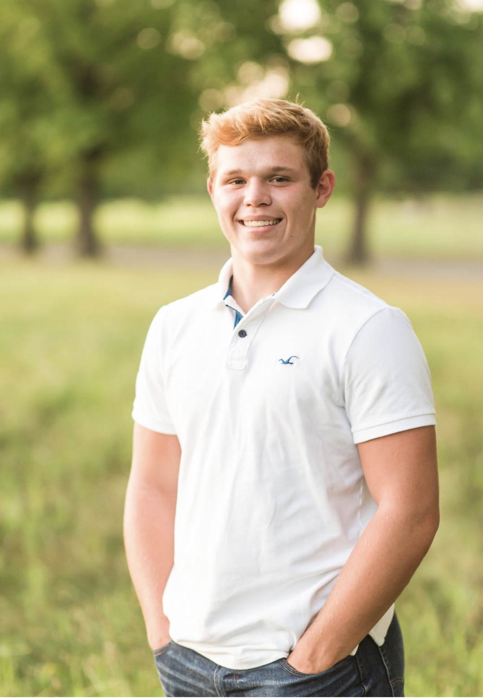

About
Hi! My name is Grant Ripperda, and I am a CS major from Sherman, IL. It's a small town in the middle of the cornfields of Central Illinois, so you probably have never heard of it. I am also on the football team here at Rose-Hulman, which takes up most of my free time. When I am home/ not in school, I enjoy riding fourwheelers and working on my cars. I also run a woodworking business (@g.r.woodworking on Instagram), which I learned how to do through my dad. In high school most of my time was spent playing sports (football, wrestling, track), lifting, and working for my business.